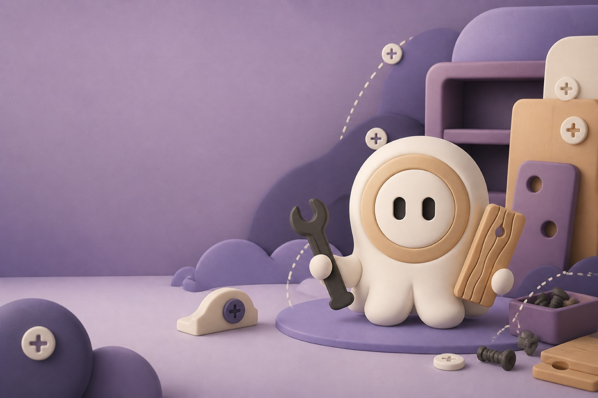

01
Overview
Assembly guidance should adapt to how people process a task
Furniture assembly combines sequencing, spatial orientation, memory, and physical action. Most instructions present every user with the same dense sequence, regardless of how much structure, reassurance, or visual guidance they need.
Our current product question: How might we make complex assembly tasks easier to understand without removing the user's sense of control?
MODU explores guidance that can change its pace, presentation, and level of detail around the user.
